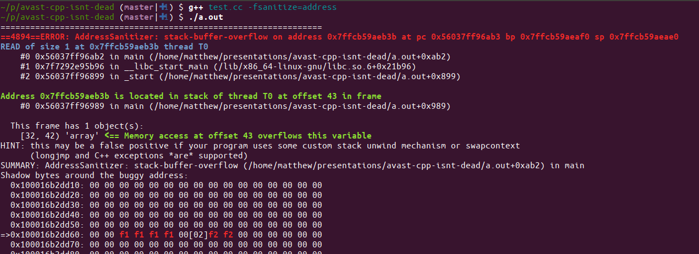
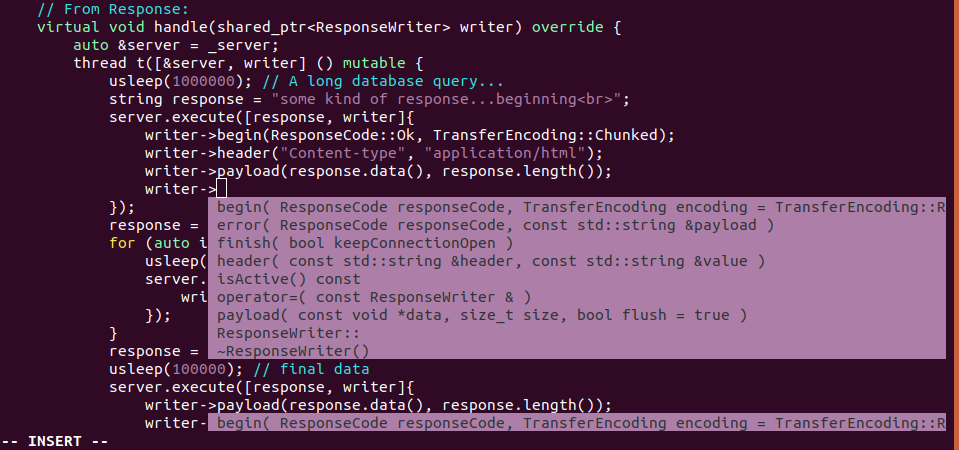
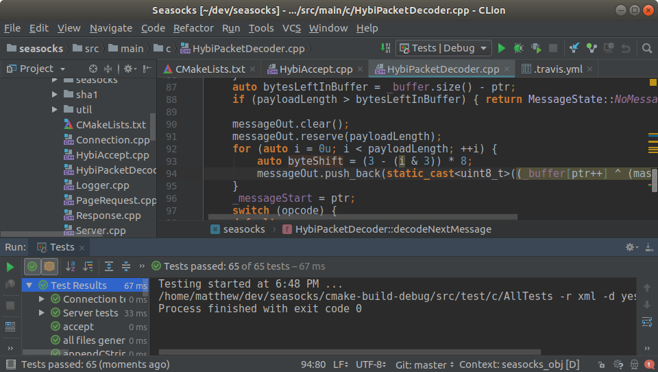

Why C++ isn't dead
Matt Godbolt
@mattgodbolt
Avast, June 2018
Who uses C++?
- Games
- Finance
- Embedded devices
- Servers
But why C++?
C++ strengths
- Clear object lifetimes
- Value types
- Performance
"But isn't C++ the language with the horrible error messages and all the crashing?"
That's old C++!
New C++ is better!
So, what's changed?
| Era | Highlights |
|---|---|
| C++98 | memory leaks, use-after-free, crashes... |
| C++11 |
auto, range-for, lambdas, move, smart pointers,
constexpr,
atomics, UDLs...
|
| C++14 | return type deduction, better lambdas |
| C++17 |
if constexpr, optional, variant,
string_view
|
| C++20 | Concepts, ranges, contracts, coroutines... maybe? |
double rms(const vector<double> &v) {
double sum = 0.0;
for (vector<double>::const_iterator i = v.begin();
i != v.end();
i++) {
sum += *i * *i;
}
return sqrt(sum);
}
double rms(const vector<double> &v) {
double sum = 0.0;
for (auto i = v.begin(); i != v.end(); i++) {
sum += *i * *i;
}
return sqrt(sum);
}
double rms(const vector<double> &v) {
double sum = 0.0;
for (auto i : v)
sum += i * i;
return sqrt(sum);
}
static double accum(double partialSum, double elem) {
return partialSum + elem * elem;
}
double rms(const vector<double> &v) {
return sqrt(accumulate(v.begin(), v.end(), 0.0, accum));
}
double rms(const vector<double> &v) {
return sqrt(accumulate(
v.begin(), v.end(), 0.0,
[](double partialSum, double elem) {
return partialSum + elem * elem;
}
));
}
double rms(const vector<double> &v) {
return sqrt(inner_product(v.begin(), v.end(), v.begin(), 0.0));
} Why C++?
Clear object lifetimes
string queryDb(const string &q) {
DbConnection conn("server", 9000);
return conn.query(q);
}
Clear object lifetimes
class Document {
vector<unique_ptr<Elem>> objects_;
public:
void add(unique_ptr<Elem> object) {
objects_.emplace_back(move(object));
}
};
Value types
- Passed by value
- Zero overhead
- Position, error code, prices, quantities, times...
- Strong typing
void buyShares(const char *symbol,
double price,
int quantity);
buyShares("GOOG", 800, 975.0); // whoops!
void buyShares(const char *symbol,
Price price,
Quantity qty);
buyShares("GOOG", Quantity(800), Price(975.0));
error: no matching function for call to 'buyShares'
buyShares("GOOG", Quantity(800), Price(975.0));
^~~~~~~~~
note: candidate function not viable: no known conversion from
'Quantity' to 'Price' for 2nd argument
Value types
class Pos {
float x = 0.0;
float y = 0.0;public:
constexpr Pos(float x, float y)
: x(x), y(y) {}
constexpr Pos() = default;
constexpr Pos operator +(Pos other) const {
return Pos(x + other.x, y + other.y);
}
// and so on for other operators...
};
Performance
auto midPoint(const vector<Pos> &vec) {
auto total = accumulate(begin(vec), end(vec), Pos());
return total / vec.size();
}
But wait, there's more!
Compilers
- Clang
- GCC
- icc
- MSVC
Sanitizers
- Memory accesses
- Undefined behaviour
- Thread safety
Sanitizers
int main(int argc, const char *argv[]) {
char array[10]{};
return array[10];
}
Sanitizers
Smart editors
- vim/emacs & YouCompleteMe
- JetBrains CLion
- Eclipse CDT
Smart editors
Smart editors
Community support
C++ isn't dead
There's never been a better time to try it!
"What about Rust?"
Rust
- Developed by Mozilla
- Memory-safe
- Value types
- Destructors
- LLVM codegen
Value types
use std::ops::Add;
#[derive(Copy, Clone)]
struct Pos { x: f32, y: f32 }
impl Add for Pos {
type Output = Pos;
fn add(self, other: Pos) -> Pos {
Pos { x: self.x + other.x,
y: self.y + other.y, }
}
}
Performance
pub fn mid_point(vec : &[Pos]) -> Pos {
let total : Pos = vec.iter().fold(
Pos { x: 0f32, y: 0f32},
|sum, x| sum + *x
);
total / (vec.len() as f32)
}
Thank you!
- matt@godbolt.org / @mattgodbolt
- Compiler Explorer: https://godbolt.org
- Blog: https://xania.org